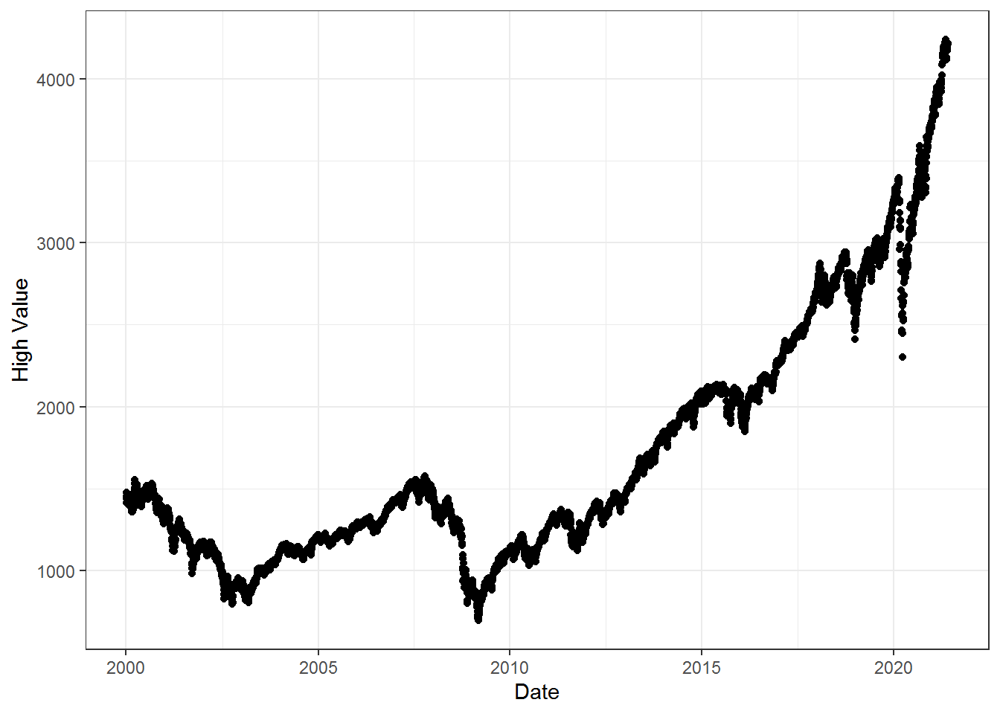
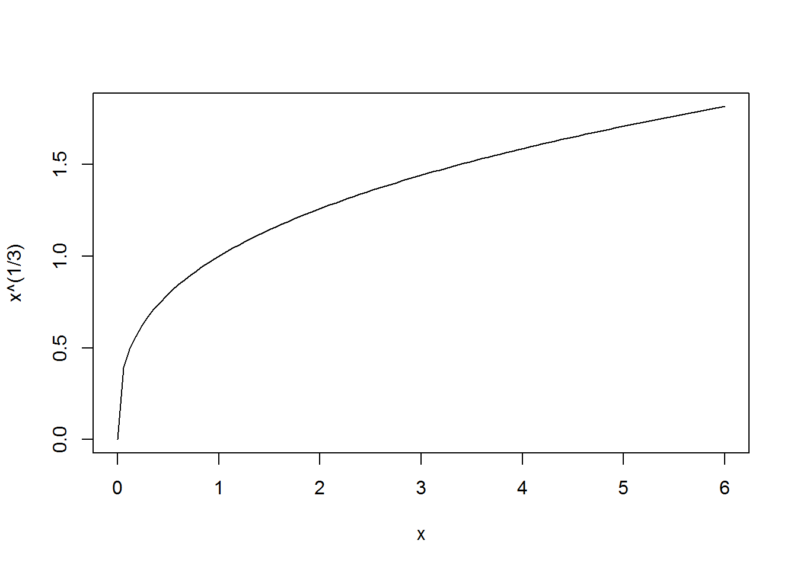

9.1 Function Properties
Throughout this chapter we will work to better understand the common functions in the secondary curriculum by studying certain properties of the functions.
Related Content Standards
- (8.F.5) Describe qualitatively the functional relationship between two quantities by analyzing a graph (e.g., where the function is increasing or decreasing, linear or nonlinear). Sketch a graph that exhibits the qualitative features of a function that has been described verbally.
- (HSF.IF.4) For a function that models a relationship between two quantities, interpret key features of graphs and tables in terms of the quantities, and sketch graphs showing key features given a verbal description of the relationship. Key features include: intercepts; intervals where the function is increasing, decreasing, positive, or negative; relative maximums and minimums; symmetries; end behavior; and periodicity.
9.1.1 Domain and Range
In this chapter we will deal with functions whose domain is a subset of the real numbers, \(\mathbb{R}\). That domain may be inherited from the situation the function is modeling. For instance, a function that gives the cost of a purchase that is based on the number of items purchased would have a domain of the natural numbers. Where a function that models the number of feet above the ground that an object is located \(t\) seconds after being dropped would have a domain of the non-negative real numbers.
Frequently, a function is only defined by an algebraic representation. In this case, the implied domain for the function is the largest subset of \(\mathbb{R}\) for which the function is defined. For example, the function \(f(x)=\sqrt{x}\) is only defined for non-negative real numbers and so that would be the implied domain for the function.
Related Content Standards
- (HSF.IF.5) Relate the domain of a function to its graph and, where applicable, to the quantitative relationship it describes. For example, if the function \(h(n)\) gives the number of person-hours it takes to assemble \(n\) engines in a factory, then the positive integers would be an appropriate domain for the function.
Once the domain for a function is determined, it is important to understand all of the possible elements in the co-domain that correspond to elements in the domain with the function, the range. The process for determining the range often involves many different techniques. If the original function is an injection, then one may be able to use the algebraic representation of the inverse function to determine the domain of the inverse function, which is the range of the original function. One may also use other properties of the function, such as its extreme points and its intervals of the domain on which the function is increasing or decreasing.
When graphing a function, we usually have the horizontal axis represent the domain of the function and the vertical axis represent the co-domain.
9.1.2 Maxima (minima) or relative maxima (relative minima)
It is often valuable to find the largest or smallest values that can be obtained by the function. These appear most obviously in optimization problems in calculus, where one finds the greatest (or least) values of \(f\), or finds the greatest (or least) values on a given interval. These extreme values often depend upon the subset of the domain considered. When looking for a maximum or minimum value we find that for differentiable functions that these extreme values occur when the derivative is zero or undefined or at the endpoints of intervals in the domain considered. Other methods for finding these extreme values include using graphing calculators to graph the functions and have the technology determine these extreme values.
9.1.3 Increasing or decreasing
It is also valuable to determine those intervals on which a function, \(f\), is increasing and those intervals on which \(f\) is decreasing. A function \(f\) is increasing on an interval \((a,b)\) if for every \(a<x\leq y<b\), \(f(x)\leq f(y)\). The function \(f\) is decreasing on \((a,b)\) if \(a<x\leq y<b\) implies that \(f(x)\geq f(y)\). We call the function strictly increasing or decreasing if the \(\geq\) and \(\leq\) symbols are replaced by strict inequality. If a function is either increasing or decreasing on its entire domain, then we call the function monotonic. One can also see that a strictly monotonic function is an injection and so we can find an inverse function when restricting the co-domain to the range.
9.1.4 Intercepts
When a function is providing a relationship between two variables, it is often useful to find the points at which either of the variables is zero. This process helps with understanding the graph of a function and often provides insight into the interpretation of the situation that a function may be modeling. While we often say that we are looking for the \(x\)-intercept and \(y\)-intercept of a function, it is important to have the flexibility that the variables have different names, especially in modeling situations. So we will try to use the convention of horizontal and vertical intercepts.
9.1.5 End behavior, singularities, and asymptotes
It is often helpful to understand what happens to the value of functions near the endpoints of a domain when the domain includes open intervals. For functions whose domain includes intervals of the form \((-\infty,c)\), \((c,\infty)\), and \((-\infty, \infty)\), this is understanding what happens to \(f(x)\) as \(x\rightarrow \infty\) and/or as \(x \rightarrow -\infty\). The study of this often focuses on horizontal asymptotes, but we will expand that perspective to a comparison of the behavior of functions ‘near’ \(\pm \infty\) to the behavior of know functions. For instance, does the function grow at a similar rate to a certain polynomial function, a certain exponential function, or possibly a certain logarithmic function?
Figure 9.2: Graph of \(y=\sin(1/x)\) (Geogebra Application)
If the domain of the function includes a bounded open interval, it is important that we understand what happens to the output of the function as the input approaches the endpoints of the open interval. For instance for \(f(x)=\frac{1}{x}\), as \(x\rightarrow 0^+\) (\(x\) approaches zero from the right) \(f(x)\rightarrow +\infty\). While as \(x\rightarrow 0^-\), \(f(x)\rightarrow -\infty\).
The function \(y=f(x)=\sin\left(\frac{1}{x}\right)\) defined on the interval \((0,\infty)\) has a very unusual behavior near \(x=0\). The function oscillates between \(-1\) and \(1\) an infinite number of times as \(x\) approaches \(0\).
9.1.6 Special Properties
In addition to the properties listed above, it is important to look for other properties of the function.
Is \(f\) a composition of known functions?
Consider \(f(x)=\sqrt{-(x-1)(x+2)}\). This function is a composition of two functions that we already know and we can use knowledge about those functions to better understand this function. We will explore this process in Section 9.9.
Does the graph of \(f\) have a particular known shape?
When modeling a set of bivariate data, it is helpful to know if the graph of the data resembles the graph of a know function, i.e. linear, exponential, or quadratic. We can then use that information to determine the best options for choosing a function to model the situation.
Does the graph have symmetry?
If the graph is symmetric about a vertical line, then it is a transformation of an even function, and if it is symmetric about a point, it is a transformation of an odd function.
Definition 9.1 A function \(f:A\subseteq \mathbb{R}\rightarrow \mathbb{R}\) is even if \(f(x)=f(-x)\) for all \(x\in A\). The function is odd if \(f(x)=-f(-x)\) for all \(x\in A\).
Is \(f\) periodic?
It is also helpful to know if the function repeats itself over the domain. For instance, if someone wants to model the length of daylight for the day then it would be helpful to know that this is a periodic relationship that repeats itself every year.
Does \(f\) have and inverse function?
We often find it useful to ‘undo’ functions by using their inverse functions. When considering real-valued functions, this inverse function represents the same relationship between two variables, but viewed from a different perspective. Understanding this perspective also helps us to better understand the original function and to expand our ability to use such a function.
As we saw in Section 5.3, if a function is an injection it can be considered a bijection from its domain onto its range. For certain functions we may need to restrict the domain of the function in order to find an inverse.
Related Content Standards
- (HSF.BF.4) Find inverse functions.
- Solve an equation of the form \(f(x) = c\) for a simple function \(f\) that has an inverse and write an expression for the inverse.
- Verify by composition that one function is the inverse of another.
- Read values of an inverse function from a graph or a table, given that the function has an inverse.
- Produce an invertible function from a non-invertible function by restricting the domain.
9.1.7 Exercises
For each of the following functions defined by their algebraic, verbal, tabular and/or graphical representation, describe the function according the the various properties described in this section. Furthermore, describe how these properties relate to the situation being modeled.
A factory is built to produce chairs and for each day of operation it has a fixed cost of $2,000 per day for rent, salaries, and other expenses, and a cost of $80 per chair built for materials. We let \(C(n)\) be the function that represents the cost of building \(n\) chairs in a day.
A person is walking down a street at a constant rate. Let \(D(t)\) be the distance from a certain lamppost \(t\) seconds from when the person starts walking down the street.
Let \(f\) be the days-in-the-month function in a non-leap year defined by the table \[\begin{array}{l|cccccccccccc} \mbox{Month number, } m & 1 & 2 & 3 & 4 & 5 & 6 & 7 & 8 & 9 & 10 & 11 & 12 \\ \hline \mbox{Days in month, } D & 31 & 28 & 31 & 30 & 31 & 30 & 31 & 31 & 30 & 31 & 30 & 31 \\ \end{array}\]
Let \(G(L)\) be the grade points for a letter grade \(L\) given by \[\begin{array}{l|ccccccccccccc} \mbox{Letter grade, } L & \mbox{A+} & \mbox{A} & \mbox{A-} & \mbox{B+} & \mbox{B} & \mbox{B-} & \mbox{C+} & \mbox{C} & \mbox{C-} & \mbox{D+} & \mbox{D} & \mbox{D-} & \mbox{F} \\ \hline \mbox{Grade Points, } G & 4.33 & 4 & 3.67 & 3.33 & 3 & 2.67 & 2.33 & 2 & 1.67 & 1.33 & 1 & .67 & 0 \end{array}\]
The closing values of the S & P 500 Index each weekday for January 2000-December 2019. 
Let \(f:\mathbb{R} \rightarrow \mathbb{R}\) be defined by \(f(x)=\sqrt[3]{x}\), whose graph is given by 